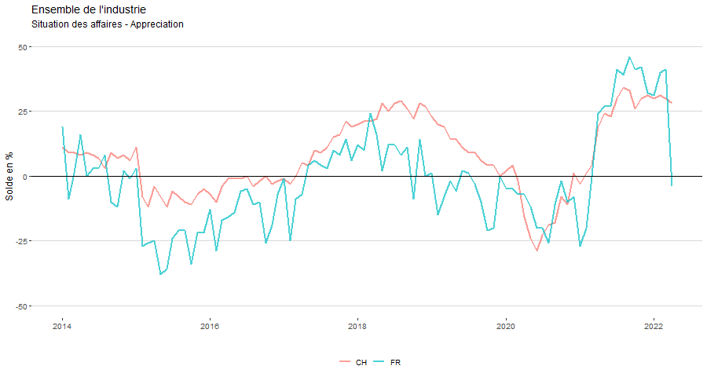
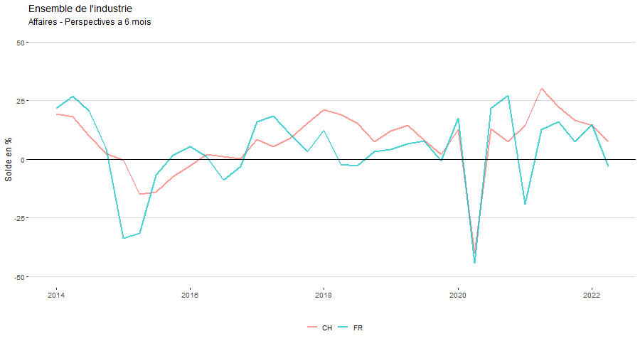

Domaine Economie
Indicateurs clés
2.4%
Taux de chômage à Fribourg
2.3%
Taux de chômage en Suisse
Autre indicateurs
-- Description --
Autre indicateurs
-- Description --
La situation à Fribourg s’assombrit
 
Sources